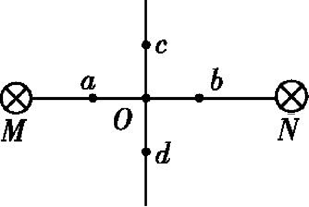
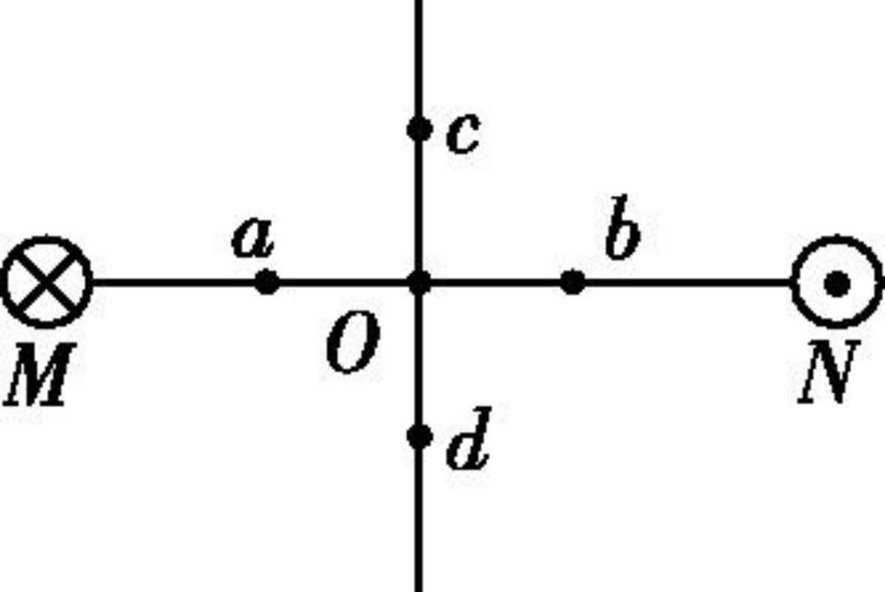
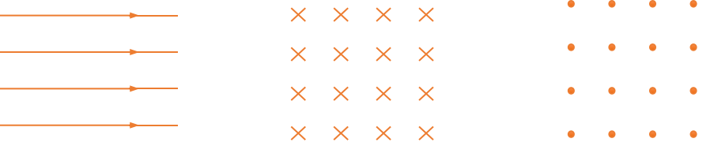
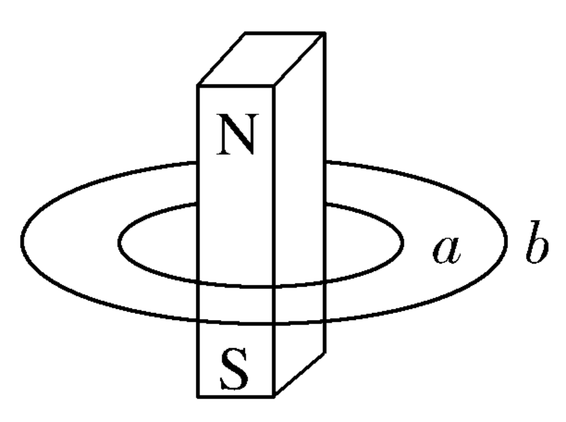
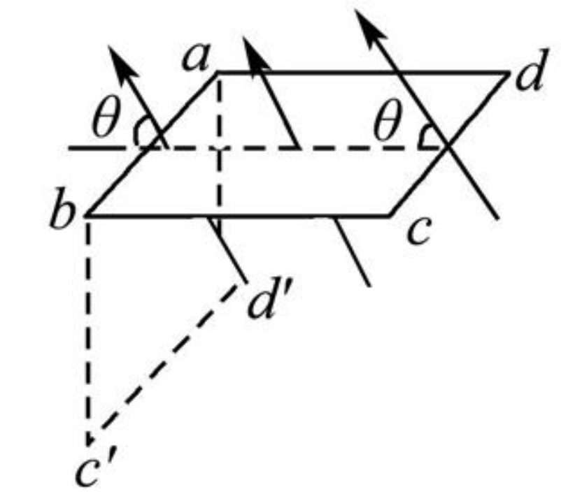

磁场_磁感线
电磁学
电路
电流元
在物理学中，把很短一段通电导线中的电流 I 与导线长度 L 的乘积 IL 叫做电流元
磁感应强度
实验 ：探究影响通电导线受力的因素

精确的实验表明：通电导线与磁场方向垂直时，它受力的大小 F 既与导线的长度 L 成正比，又与导线中的电流 I 成正比
\begin{cases} F\propto I \\ F\propto L \end{cases} \Rightarrow F\propto IL
概念
- 定义：在磁场中垂直于磁场方向的通电导线，所受的磁场力 F 跟电流 I 和导线长度 L 的乘积 IL 的比值叫磁感应强度
- 公式：B=\frac{F_{\bot}}{IL}
- 单位：特斯拉(tesla)，简称特，符号是 \mathrm{T}，即 1\;\mathrm{T}=1\;\frac{\mathrm{N}}{\mathrm{A\cdot m}}
- 标矢性：矢量，它的方向就是该处小磁针静止时 N 极所指的方向。
判断
- 若长为 L、电流为 I 的导线在某处受到的磁场力为 F, 则该处的磁感应强度一定为 F/IL
- 由 B=F/IL 知, B 与 F 成正比, 与 IL 成反比
- 由 B=F/IL 知, 一小段通电导线在某处不受磁场力, 说明该处一定无磁场
注意
- B 与 L、I、F 无关，与场源和该点在场中的位置有关；
- 用 B=\frac{F}{IL} 计算时，导线电流的方向与磁场方向必须垂直；
- 通电导线与磁场方向垂直时受到的磁场力最大，平行时为零。
练习
MN 为等大同向或反向电流，求： 1. 左图 a、o、c 磁场的方向。 2. 右图 b、o、d 的磁场方向


匀强磁场
- 定义：强弱、方向处处相同的磁场
- 特点：磁感线是一组间隔相同的平行直线
- 常见的匀强磁场:
- 相隔很近的两个异名磁极之间的磁场
- 通电螺线管内部的磁场
- 相隔一定距离的两个平行放置的线圈通电时，其中间区域的磁场
- 匀强磁场的磁感线

磁通量
- 定义：设在磁感应强度为 B 的匀强磁场中，有一个与磁场方向垂直的平面，面积为 S，我们把 B 与 S 的乘积叫作穿过这个面积的磁通量，简称磁通, 用符号 \varPhi 表示
- 公式：\varPhi=BS
- 单位：韦伯(weber)，简称韦，符号是 \mathrm{Wb}
思考
匀强磁场中，若 B 与 S 不垂直时，如何处理？
思考
若空间存在部分区域的匀强磁场 B，刚好全部穿过面积为 S 的矩形，则： - 当矩形面积增大为 2 S 时，磁通量为多大？ - 当 2 S 矩形以底边为转轴逆时针旋转 30^{\circ}，磁通量为多大？
- 标矢性：
- 磁通量为标量，但是有正负，叠加时遵循代数和
- 磁通量正负的理解：规定正面和反面，从正面穿过为正，则从反面穿过为负。
练习
如图所示，两个同心放置的平面金属圆环，条形磁铁穿过圆心且与两环平面垂直，比较通过两圆环的磁通量大小 \varPhi_{a}\underline{\qquad}\varPhi_{b} 。

练习
如图所示，面积为 S 的矩形线框 abcd 处在磁感应强度为 B 的匀强磁场中，磁场方向与线框平面成 \theta 角 (在实线位置)，若线框以 ab 为轴顺时针转动 90^{\circ} 角 (在虚线位置)，则在实线位置和虚线位置两种情况下，穿过 abcd 的磁通量分别为多大?

答案
不妨规定线框位于实线位置时，磁通量为正
- 实线位置：磁感应强度垂直线框平面的分量 B_{\bot} = B\sin \theta，磁通量 \varPhi=B_{\bot}S=BS\sin \theta
- 虚线位置：磁感应强度垂直线框平面的分量 B_{\bot}' = B\cos \theta，磁通量 \varPhi=-B_{\bot}'S=-BS\cos \theta
也可以定义面元向量来做